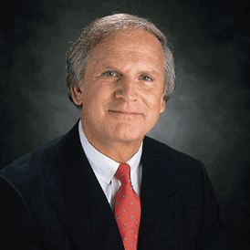

Denis Waitley
- Full Name: Dr. Denis E. Waitley
- Born: 1924
- Country: USA
Best Books:
- Seeds of greatness theory
- Seeds of greatness the tenth best kept secret of total success
- The winters age
- Empires of the mind listen to lead the success succeed in the knowledge-based world
Dennis is an American motivational speaker and writer, consultant and best-selling author and former Navy pilot. He has authored 15 book and lectured hundreds of audio programs with over 10 million audio programs sold in 14 languages. He inspires, informs, and entertains his audiences from athletic locker rooms to NASA control rooms.
- Expect the best, plan for the worst, and prepare to be surprised.
- You must welcome change as the rule but not as your ruler.
- Winners take time to relish their work, knowing that scaling the mountain is what makes the view from the top so exhilarating.
- A smile is the light in your window that tells others that there is a caring, sharing person inside.
- Change the changeable, accept the unchangeable, and remove yourself from the unacceptable.
- Change your passions, not to your pension.
- Don't be time manager, be a priority manager. Cut your major goals into bite size pieces. Each small priority or requirement on the way to ultimate goal become a mini goal in itself.
- Failure should be our teacher, not our undertaker. Failure is delay not defeat. It is temporary detour not a dead end. Failure it's something we can avoid only by saying nothing doing nothing and being nothing.
- Losers live in the past. Winners learn from the past and enjoy working in the present towards the future.
- Life is inherited risky. There is only one big risk you should avoid at all costs and that is the risk of doing nothing.
- Life is not accountable to us. We are accountable to life.
- Mistakes are painful when they happen, but real letter collection of mistake what is called experience.
- No man or woman is an island. To exist just for yourself is meaningless., you can achieve the most satisfaction when you feel related to some greater purpose in life something greater than yourself.
- Time is the most precious element of human existence. The successful person knows how to put energy into time and how to draw success from time.
- When you are in the valley, keep your Goal firmly in view renewed energy to continue the climb.
- You must learn from your past mistakes, but not lean your past successes.
- Get excited and enthusiastic about your own dream. This experiment is like a forest fire-- you can smell it, taste it, and see it from a mile away.
- The results you achieve direct proportion to the effort you apply.
- Forget about consequences of failure. Failure is only a temporary change in direction to set your straight for your next success.
- If you believe you can, you probably can. If you believe you won't, you most ass assuredly won't. Belief is the ignition switch that gets you off the launching pad.
- Life is the movie you see through your own eyes. It makes little difference what's happening out there. It's how you take it that counts.
- Two primary choices in life: To accept conditions as they exist, or accept responsibility for changing them.